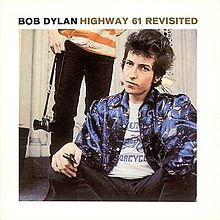

Highway 61 Revisited

Released: August 30, 1965
Length: 51:26
Producer(s): Bob Johnston, Tom Wilson on
Like a Rolling Stone
Label: Columbia
Side 1
Like a Rolling Stone
Tombstone Blues
It Takes a Lot to Laugh, It Takes a Train to Cry
From a Buick 6
Ballad of a Thin Man
Side 2
Queen Jane Approximately
Highway 61 Revisited
Just Like Tom Thumb's Blues
Desolation Row
Home